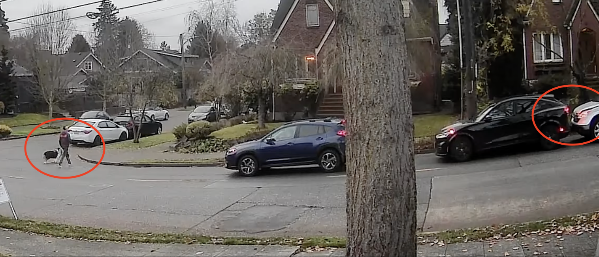
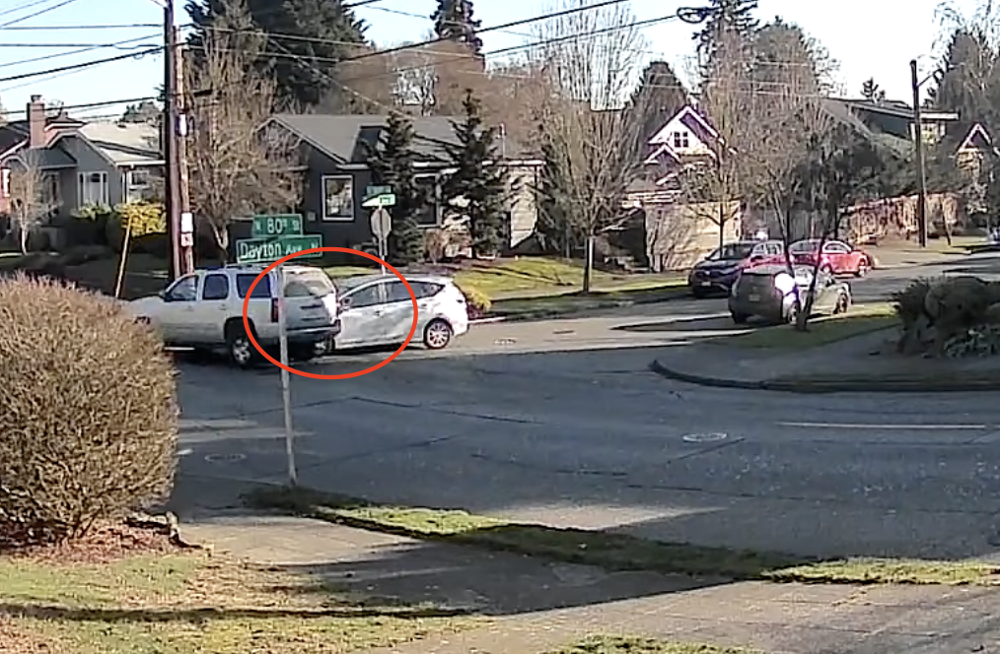
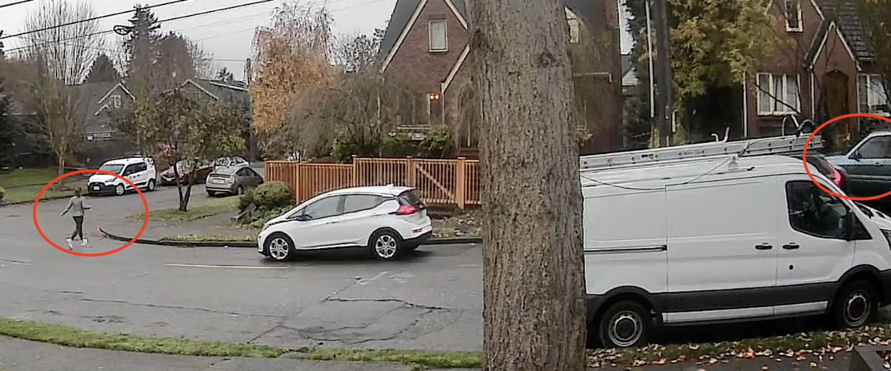
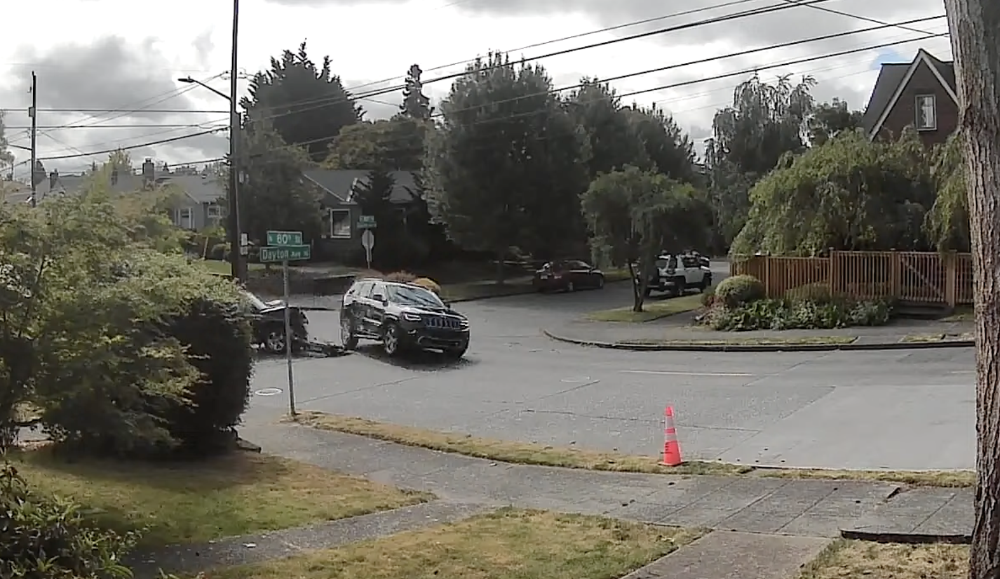
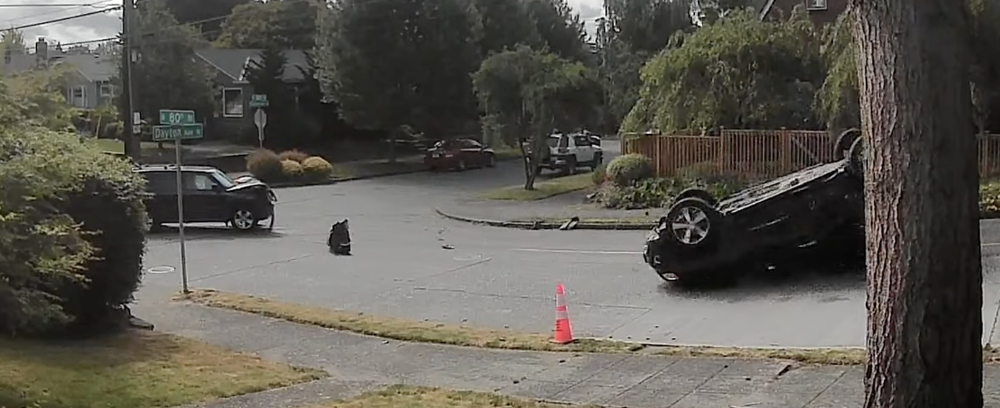

Community petition · Seattle, WA
Install a traffic signal at N 80th St & Dayton Ave
Addressed to the Seattle Department of Transportation & Seattle City Council
Dear City Council Member for District 6, Dan Strauss & members of the Seattle Department of Transportation (SDOT),
We, the undersigned residents of the Phinney Ridge neighborhood of Seattle, are writing together to ask that action be taken to address a serious and ongoing public safety hazard at the intersection of North 80th St and Dayton Avenue.
This intersection has been the site of repeated traffic accidents and near-misses that endanger our neighbors, our children, and anyone who passes through. These conditions combine to make it especially dangerous:
- The stop sign on Dayton Avenue is poorly visible to approaching drivers, resulting in frequent failures to yield.
- The downhill grade east-bound on N 80th St causes braking to be misjudged, so vehicles arrive at the intersection at speed.
- Cars often speed above the speed limit on 80th.
- The intersection has constant pedestrian traffic.
Our neighbors have documented the following 6 incidents at this location. Security camera footage and additional records are available and will be submitted alongside this petition.
Documented Incidents

December 12, 2024
A pedestrian crossing at N 80th St & Dayton Ave caused a chain reaction: as traffic slowed to yield, a following vehicle failed to stop in time and rear-ended the car ahead. Security camera footage captured the incident.
Security camera footage · Dec. 12, 2024 · N 80th St & Dayton Ave

January 29, 2025
A northbound vehicle on Dayton Avenue failed to stop at the stop sign and T-boned a vehicle traveling eastbound down N 80th St. The intersection's street signs are visible in the footage.
Security camera footage · Jan. 29, 2025 · N 80th St & Dayton Ave

November 26, 2025
A pedestrian crossing at N 80th St & Dayton Ave triggered a near-miss: as traffic slowed to yield, a following van failed to stop in time and swerved off the road, mounting the curb onto boulders along N 80th St.
Security camera footage · Nov. 26, 2025 · N 80th St & Dayton Ave


June 7, 2026
A southbound vehicle on Dayton Avenue failed to stop at the stop sign and rolled into the intersection, T-boning a vehicle traveling westbound up N 80th St. The force of the impact flipped the vehicle onto its roof. Fortunately, no serious injuries were reported.
Security camera footage · June 7, 2026 · N 80th St & Dayton Ave
June 27, 2026
A near-miss involving three parties at once: a car slowing abruptly to turn onto Dayton, a truck attempting to cross from Dayton, and pedestrians crossing simultaneously. A second car swerved into the oncoming lane on N 80th to avoid the truck, narrowly avoiding a collision.
Security camera footage · June 27, 2026 · N 80th St & Dayton Ave
November 8, 2026
A southbound vehicle on Dayton Ave nearly collided with a westbound vehicle on N 80th St. Parked cars along the intersection blocked sightlines, preventing drivers from seeing each other until it was almost too late.
Camera footage · Nov. 8, 2026 · N 80th St & Dayton Ave
Several undocumented near-misses
Neighbors have also witnessed, though not recorded on camera, numerous instances of cyclists and pedestrians narrowly avoiding collisions while crossing N 80th St at Dayton Ave.
We share this neighborhood and care deeply about the safety of everyone who lives and travels through it. We hope the city will act with us, before a serious injury occurs.
We are asking SDOT to
- Conduct a formal traffic signal warrant study, with particular attention to Warrant 7 (Crash Experience) under the MUTCD
- Install a traffic signal at this intersection if warranted
- Implement interim safety measures immediately — such as improved signage, high-visibility markings, or a flashing warning beacon — while any study is underway
Add your signature
By signing below, I confirm that I am a resident of or frequent visitor to the area around North 80th St and Dayton Ave and I support this petition. Your address will be submitted to the city alongside it.
Your information is only used for this petition and will not be sold, shared, or displayed publicly.